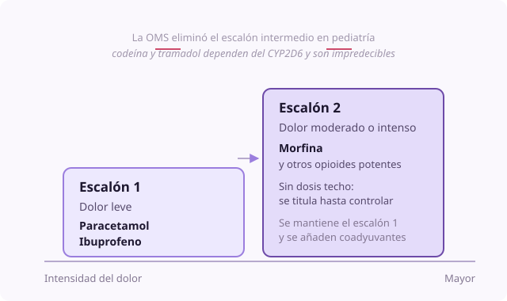

Ficha de síntoma
Valoración del dolor en el niño
- Dominio
- Dolor
- Nivel
- Básico
- Edades
- Cualquier edad
El dolor es el síntoma más frecuente y más temido en cuidados paliativos pediátricos, y el que peor se mide. Valorarlo bien es la condición previa a tratarlo bien: Sin una medida repetible no se puede saber si una intervención ha funcionado, y sin eso la analgesia se ajusta por impresiones.
Por qué ocurre
El dolor es una experiencia sensorial y emocional, no solo una señal nerviosa. Eso significa que la misma lesión duele distinto según el miedo, el cansancio, el significado que el niño le da y el estado de sus padres. Por eso una valoración que solo mide intensidad se queda corta.
Causas
- Enfermedad de base: Infiltración tumoral, isquemia, inflamación, distensión visceral
- Complicaciones: Fractura patológica, úlcera por presión, mucositis, estreñimiento
- Procedimientos: Punciones, curas, movilizaciones, aspiración de secreciones
- Espasticidad y distonía en el niño con daño neurológico
- Causas no evidentes y muy frecuentes: Reflujo gastroesofágico, retención urinaria, fecaloma, otitis, caries
Qué evaluar
- Elegir la escala por la capacidad del niño, no por su edad: Autoinforme siempre que sea posible, y solo si no lo es, observacional
- Menos de 3 años o sin lenguaje: FLACC. Niño con discapacidad: Escala r-FLACC individualizada con la familia. Neonato: PIPP-R o CRIES
- De 3 a 7 años: Escala de caras de Wong-Baker, aclarando que hablan de dolor y no de estado de ánimo
- Más de 8 años: Escala numérica de 0 a 10
- Preguntar siempre por el dolor actual y además por el peor y el mejor momento de las últimas 24 h, porque preguntar solo por el presente hace que se pase por alto el dolor irruptivo
- Caracterizar: Dónde, desde cuándo, cómo es, qué lo empeora, qué lo alivia, si despierta por la noche
- Preguntar a los padres cómo saben ellos que a su hijo le duele: Detectan cambios sutiles que ningún profesional reconocería
- Volver a puntuar entre 30 y 60 minutos después de cada intervención: Ese es el dato que dice si funcionó
Manejo no farmacológico
- Presencia de los padres, contacto físico y contención, que en el lactante es tan eficaz como un analgésico menor
- Sacarosa oral y succión no nutritiva en el neonato antes de un procedimiento
- Distracción activa adaptada a la edad: Burbujas, cuentos, música, pantalla, respiración
- Calor o frío local, masaje, cambios posturales
- Explicar al niño qué va a pasar y darle algún control sobre ello, aunque sea mínimo
- Cuidar el entorno: Luz, ruido, temperatura, interrupciones del sueño
Manejo farmacológico
- Paracetamol
- 15 mg/kg VO cada 4 a 6 h, techo de 60 a 75 mg/kg/día. Primer escalón, y siempre asociado al opioide porque permite reducir su dosis.
- Ibuprofeno
- 5 a 10 mg/kg VO cada 6 a 8 h, techo de 40 mg/kg/día. Dolor con componente inflamatorio y dolor óseo, si no hay trombopenia ni nefropatía.
- Morfina
- 0.2 mg/kg VO cada 4 h, máximo 5 mg en la dosis inicial. Segundo escalón, directamente si el dolor es moderado o intenso.
Cuándo escalar
Si el dolor no baja tras dos ajustes de dosis bien hechos, si aparece un dolor nuevo o de características distintas, si hay signos neurológicos acompañantes, o si aparecen efectos adversos que impiden subir la dosis. En esos tres casos hay que replantear el diagnóstico del dolor antes de seguir escalando, y consultar con un equipo especializado.
Qué decir a la familia
El dolor no hay que aguantarlo ni ganárselo. Tenemos medicinas buenas y las vamos a ajustar hasta que esté bien, así que avísennos siempre que lo vean con dolor aunque les parezca poco.
Qué evitar
- Decidir que un niño no tiene dolor porque está quieto o dormido: El niño con dolor crónico deja de protestar
- Usar una escala observacional cuando el niño puede autoinformar
- Preguntar solo por el dolor de este momento y pasar por alto el irruptivo
- Pautar analgesia a demanda en un dolor persistente en lugar de a horas fijas
- Usar la vía intramuscular, que duele y está proscrita en pediatría
- Atribuir todo el dolor a la enfermedad de base sin descartar estreñimiento, retención urinaria o una caries
Perla clínica
La pregunta más rentable de toda la valoración es qué le gustaría poder hacer que ahora no puede por el dolor. Convierte una cifra en un objetivo comprobable: Dormir la noche entera, aguantar sentado, que no le duela al cambiarlo.

valoración escalas FLACC autoinforme primera línea